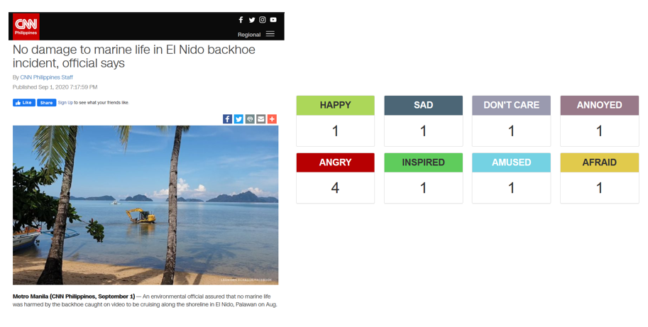

by Adrian Perez,
Kristoffer Tabong,
Matthew Maulion,
Rafael Madrigal, and
Tonee Bayhon

Executive Summary
Emotion plays an influential role in the field of journalism. Depending on the selection of facts and arguments, the representation of truth is bent towards an emotion. Thus, delivering emotionally driven news while sustaining ethical, social, and economic values of journalism is a huge challenge to the media. Emotions like happiness, fear, anger, hatred, and love are derived from one's mood, relationships, or circumstances. These emotions are expressed through numerous channels like body language, voice, facial expressions, and written messages. As emotions are subjective, complex experiences, several challenges were identified to recognize emotional labels from these channels. In the case of text data, extracting emotions from these creates highly sparse data with many dimensions. In this paper, we employ ensemble classification techniques from machine learning to recognize the emotion distribution from news articles. We leverage the crowd annotated mood metrics from Rappler as our target feature for the machine learning models. Using 17548 articles from Rappler, we used eight separate machine learning models, one for each mood type, to train and test the models. The resulting models outperformed the F1 score using Dummy Classifier, which serves as the baseline. These results offer a simple way for news agencies, marketers, and corporates to recognize reader-perspective emotion distribution from the text. Also, the results can generate an emotion vector using classifier models to measure the relative strengths of emotions that can surpass benchmark measures. Furthermore, this study can be improved by using advanced natural language processing methods and deep learning models.